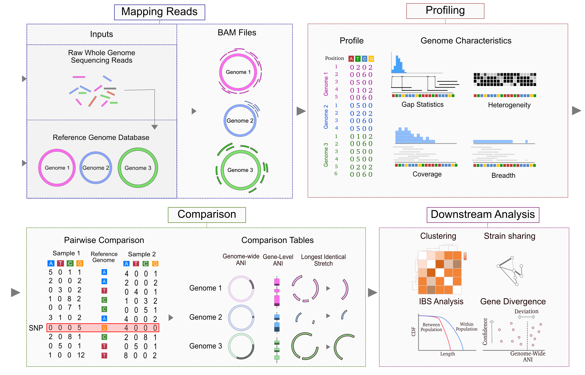
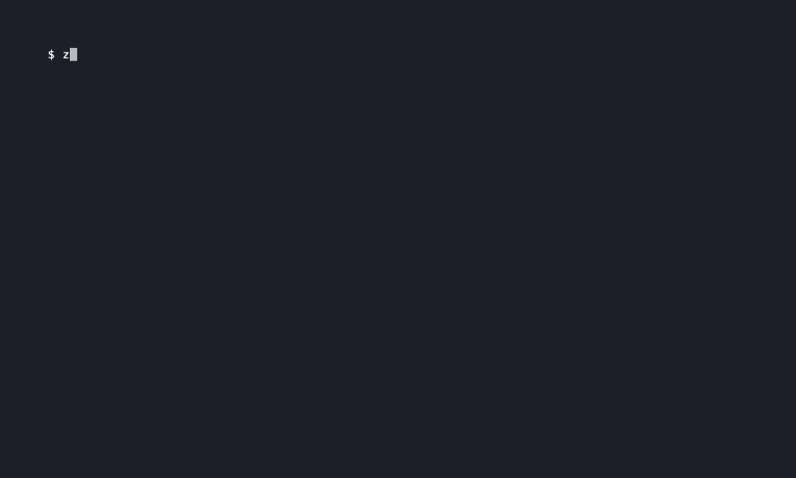

Quick Start
Strain-level metagenomics in three commands. ZipStrain maps reads, profiles them at single-nucleotide resolution, and compares samples by ANI to tell whether they share a strain.

Install
# Conda (recommended — bundles samtools and the map aligners)
conda create -n zipstrain -c conda-forge -c bioconda python=3.12 zipstrain bowtie2 samtools sylph
conda activate zipstrain
zipstrain test
Prefer pip? pip install zipstrain (then install samtools separately). Full options: Installation.
The three commands
1. map — reads → BAMs
Aligns reads to a reference and writes sorted BAMs plus a samples.txt ready for profiling. Omit --reference-fasta to let Sylph pick and build a reference automatically. Resumable if interrupted.
zipstrain map -i reads.csv -o mapped \
--reference-fasta ref.fna --stb-file ref.stb

2. profile — BAMs → nucleotide profiles
Counts A/C/G/T at every reference position and writes per-genome stats (coverage, breadth, a present/absent call) and SNVs. Missing assets are auto-generated and cached.
zipstrain profile -i mapped/samples.txt -f ref.fna -s ref.stb -r profiled
3. compare — profiles → ANI
Compares every pair of samples by popANI (near 100% ⇒ same strain). Point --profile-db at a CSV of profile_name,profile_location.
zipstrain compare --profile-db profiles.csv -r compared
Every run writes a zipstrain_run.log so you can tell if it is running, finished, or crashed.
Next steps
- Tutorial — worked end-to-end examples (CLI and Nextflow)
- Expected output — every output file and column explained
- User Manual — full command reference and the Nextflow pipeline